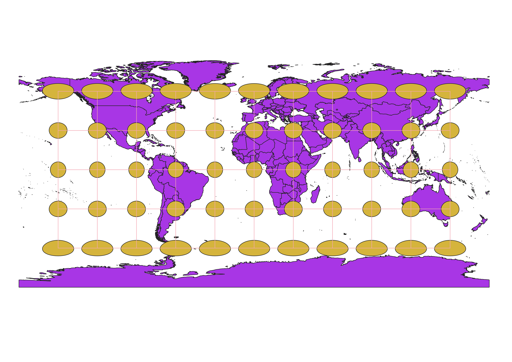
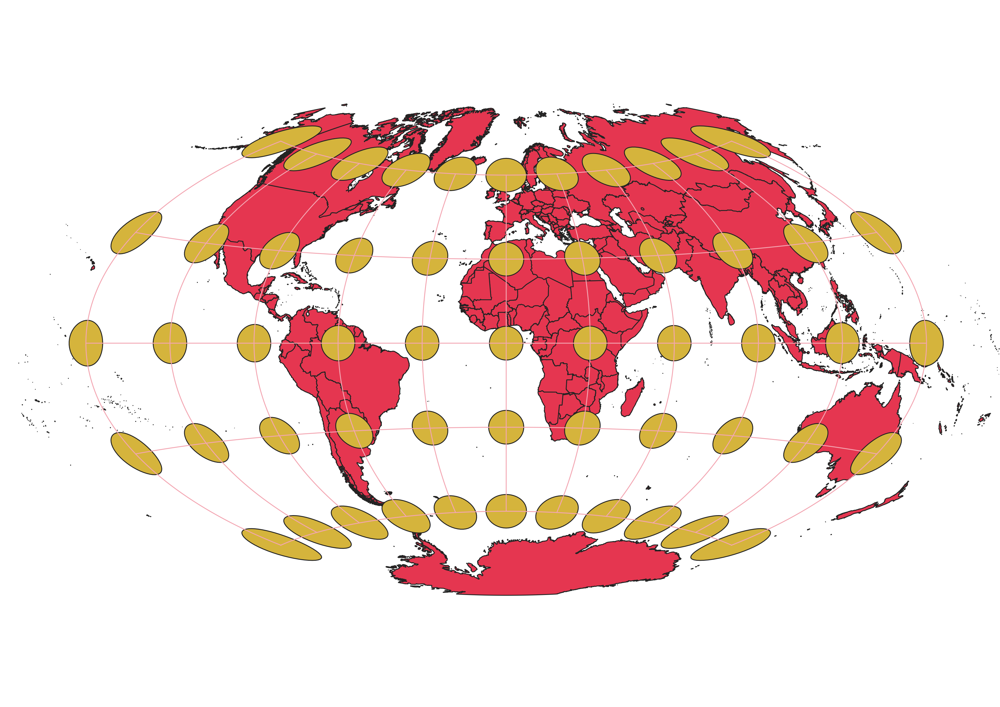
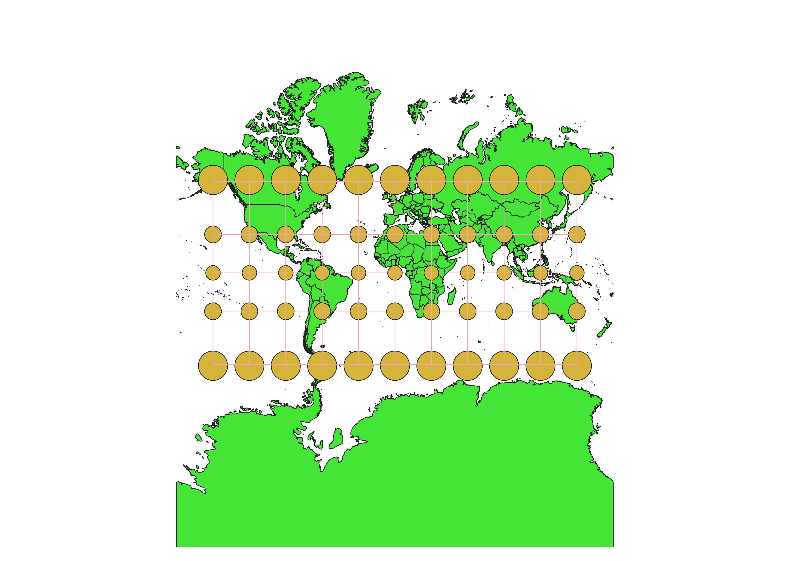
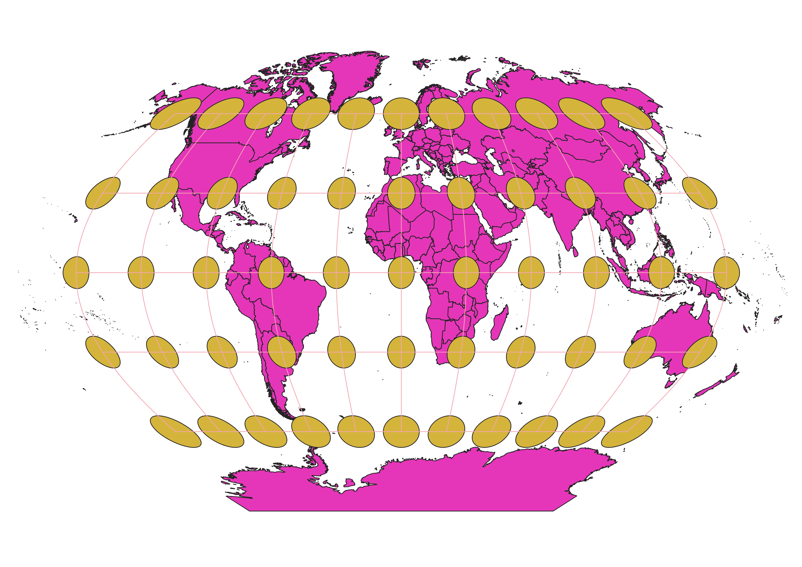
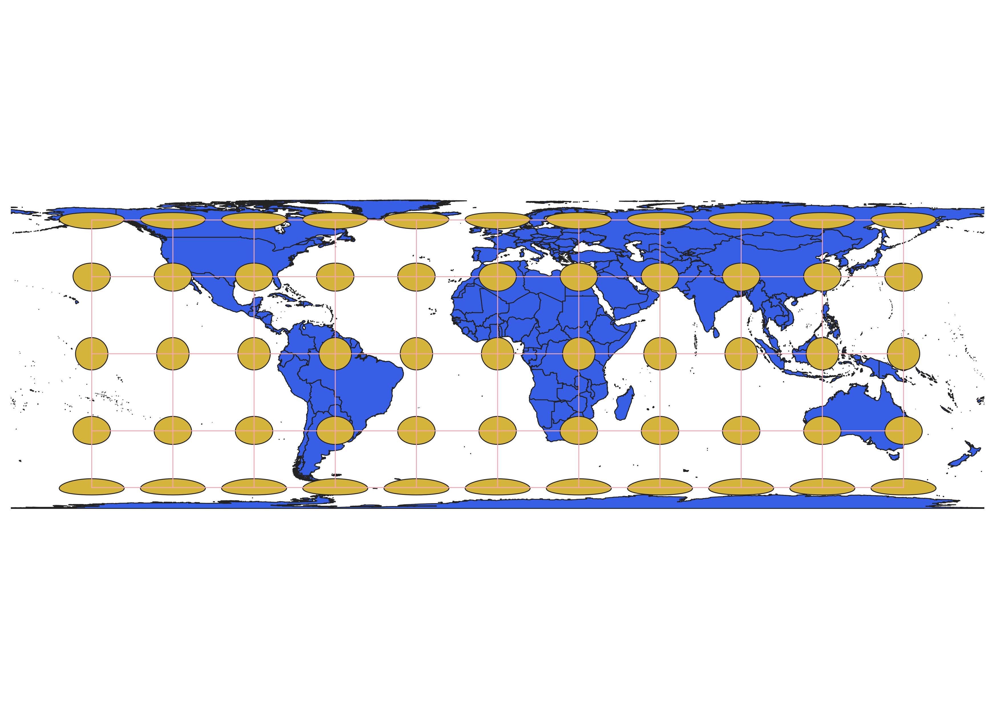
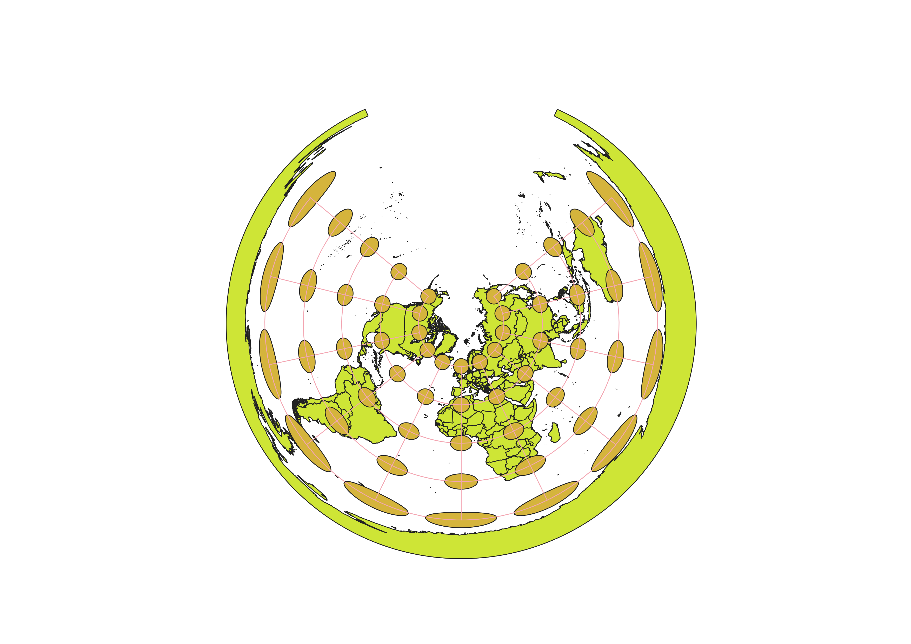

In this project I learned how to display images in different projections
My first step was to download the Indicatrix mapper pluggin into QGIS.
I had to search for it under the pluggin option at the top of the screen and install it.
The pluggin is super helpful because it will help me use Tissot's idicatrix for a given p[rojection.
My next step was to load in a vector map into QGIS and click on the button in the bottom part of the screen that allows you to change the current projection.
This is how I will be able to use different projections within QGIS.
WGS84 Projection
This projection is a common one and is used by many to quickly display the entire world
on one relatively equal, rectangular surface. The issue with this projection is that the further you get from the equator
and center of the map, the more innaccurate and stretched different land areas become.

Aitoff Projection
This projection does a better job at highlighting the natural curve that Earth has
and is a bit more accurate in some areas than WGS84. However, curving something that is going to be on a
flat surface is very hard and there are still areas that are innaccurate as displayed by the grid lines.

EPSG 3857 Projection
This projection tries to keep the original shape of countries but the result is that
the areas close to the poles are extremely distorted. Antarctica and Greenland appear to be asbolutely massive, when
in reality they are much smaller than portrayed. I personally do not think like this map and think it should
be avoided when teaching young children geography because then children think Greenland and Antarctica are the land masses on Earth

EPSG 53018 Projection
Similar to Aitoff, this projection tries to demonstrate the natural curve of Earth. The distortion
not nearly as bad as some of the other projections. The poles appear much larger than they are due to vertical stretching.

EPSG 54034 Projection
This projection displays the world as a cylindrical surface. Due to this,
land areas located near the poles are severely distorted horizontally. Antartica almost stretches the entirety of the map.
Russia stretches the entirety of half of the map.

EPSG 54027 Projection
This projection essentially takes an aerial view of the Earth in its spherical form and looks
down from the North pole. Areas around the North pole are accurate and areas further down the Earth become very distorted.
Antartica is so distorted that it actually wraps around the entirety of the globe.

EPSG 102016 Projection
This projection is very, very similar to the last projection. One of the
main differences is that the vertical grid lines are equal throughout the globe. As the projection moves towards
the south pole, it becomes extremely distorted.

ESRI 54046
This projection attempts to illustrate the curve of Earth and the horziontal and vertical ends
are distorted as a result. The North and South poles are pointed, to better display where these poles are located.
Anatartica and Greenland are more accurate in this projection, while areas such as Alaska are distorted.

ESRI 53029
This projection is similar to ESPG 3857 in that Anatartica is displayed much larger than it actually is.
This map projects a slight curvature of Earth. The prime meridian and equator are very accuarate in this projection.
Areas at the far end, horizontally east and west, are actually close to being accurate. It is mainly the areas up North and
South that are terribly innacurate.

Data used for this project
Download Natrual Earth 1:10m Cultural Vector